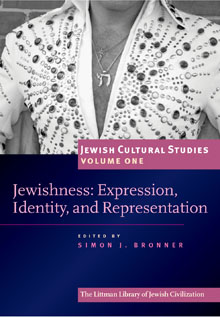

Jewish Cultural Studies, Volume 1
Jewishness: Expression, Identity, and Representation
This volume proposes that the idea of ‘Jewish’, or what people think of as ‘Jewishness’, is revealed in the expressions of culture. It helps to contemporarize and contextualize Jewish experience by considering the social expressions, identities, and representations that are labelled Jewish—not only what Jews, do but what is thought by and about Jews. This new approach opens up a broad and fertile field for new ideas on the meaning of ‘Jewish’.
More info
The Jewish Cultural Studies series offers a contemporary view of Jewish culture around the globe. Multidisciplinary, multi-focused, and eclectic, it covers the cultural practices of secular Jews as well as of religious Jews of all persuasions, and from historical as well as contemporary perspectives. It also considers the range of institutions that represent and respond to Jewishness, including museums, the media, synagogues, and schools. More than a series on Jewish ideas, it uncovers ideas of being Jewish.
This volume proposes that the idea of 'Jewish', or what people think of as 'Jewishness', is revealed in expressions of culture and applied in constructions of identity and representation. In Part I, 'Expression', Elly Teman considers how the kabbalistic red string found at sites throughout Israel conveys a political and psychological response to terrorism. Sergey Kravtsov examines Jewish and non-Jewish narratives concerning a synagogue in eastern Europe. Miriam Isaacs looks at expressions of cultural continuity in DP camps in the aftermath of the Holocaust, and Jascha Nemtsov discusses how Jewish folk music was presented as high art in early twentieth-century Germany.
In Part II, 'Identity', Joachim Schlör enquires how the objects taken by emigrants leaving Germany for Palestine after Hitler¹s rise to power represented their identities. Hanna Kliger, Bea Hollander-Goldfein, and Emilie Passow examine how survivors' narratives become integrated into family identities. Olga Gershenson offers close readings of how the identities of Jews as enacted in post-perestroika films highlight conflicting Russian attitudes towards Jews. Ted Merwin considers commercial establishments as 'sacred spaces' for Jewish secular identities.
Part III, 'Representation', opens with stories collected in Israel by Ilana Rosen from Jews who lived in Carpatho-Russia, while Judith Lewin considers the characterization of the Jewish woman in French literature. Holly Pearse and Mikel Koven, respectively, decode the Jewishness of modern radio comedy and Hollywood film.
The idea of Jewishness is applied in the volume with provocative interpretations of Jewish experience, and fresh approaches to the understanding of Jewish cultural expressions.
About the editor
Simon J. Bronner is Distinguished University Professor of American Studies and Folklore at the Pennsylvania State University, Harrisburg, where he was founding director of the campus’s Holocaust and Jewish Studies Center. He has also taught at Harvard, Leiden (Netherlands), and Osaka (Japan) universities. He is the author and editor of over thirty-five books, including Youth Cultures in America (2016), Folklore: The Basics (2016), Greater Harrisburg’s Jewish Community (2011), Explaining Traditions: Folk Behavior in Modern Culture (2011), and Encyclopedia of American Folklife (2006). He edits the Material Worlds series for the University Press of Kentucky and has published in Jewish cultural studies in the Journal of Modern Jewish Studies, Jewish History, Yiddish, Markers, and Chuliyot: Journal of Yiddish Literature. As well as editing the Littman Library’s Jewish Cultural Studies series, he leads the Jewish Folklore and Ethnology section of the American Folklore Society. He has received the Kenneth Goldstein Award for Lifetime Academic Leadership, the Wayland D. Hand Prize in history and folklore, and the Peter and Iona Opie Prize in children’s culture from the American Folklore Society for his scholarly accomplishments.
CONTRIBUTORS
Simon J. Bronner, Olga Gershenson, Bea Hollander-Goldfein, Miriam Isaacs, Hannah Kliger, Mikel J. Koven, Sergey R. Kravtsov, Judith Lewin, Ted Merwin, Jascha Nemtsov, Emilie S. Passow, Holly A. Pearse, Ilana Rosen, Joachim Schlör, Elly Teman
Contributor information
Olga Gershenson, Assistant Professor, Department of Judaic and Near Eastern Studies, University of Massachusetts at Amherst
Bea Hollander-Goldfein, Director of the Transcending Trauma Project, Jefferson Medical College, Philadelphia
Miriam Isaacs, Associate Professor of Yiddish Language and Culture, Joseph and Rebecca Meyerhoff Center for Jewish Studies and the Department of Germanic Studies, University of Maryland, College Park
Hannah Kliger, Senior Adviser to the Chancellor and Professor of Communication and Jewish Studies, Pennsylvania State University, the Abington College
Mikel J. Koven, Lecturer, Department of Theatre, Film and Television Studies, University of Wales, Aberystwyth
Sergey R. Kravtsov, researcher, Center for Jewish Art, Hebrew University of Jerusalem
Judith Lewin teaches comparative literature in the English Department and in the programmes on Women’s and Gender Studies and Religious Studies, Union College
Ted Merwin, Assistant Professor of Religion and Judaic Studies, and Director, Milton B. Asbell Center for Jewish Life, Dickinson College, Carlisle, Pennsylvania
Jascha Nemtsov, pianist and musicologist, member of the School of Jewish Studies, University of Potsdam
Emilie S. Passow, Associate Professor in the Department of English and Philosophy and the Judaic Studies Program, Drexel University, Philadelphia
Holly A. Pearse teaches religious studies at Wilfred Laurier University, Waterloo, Ontario
Ilana Rosen, Senior Lecturer, Department of Hebrew literature Ben-Gurion University of the Negev, Beer Sheva
Joachim Schlör, Professor of Jewish-Non-Jewish Relations, University of Southampton
Elly Teman, postdoctoral scholar, University of California, Berkeley
Contents
Preface
SIMON J. BRONNER
Introduction: The Chutzpah of Jewish Cultural Studies
SIMON J. BRONNER
Part I: Expression
1. The Red String: The Cultural History of a Jewish Folk Symbol
ELLY TEMAN
2. A Synagogue in Olyka: Architecture and Legends
SERGEY R. KRAVTSOV
3. Yiddish in the Aftermath: Speech Community and Cultural Continuity in Displaced Persons Camps
MIRIAM ISAACS
4. 'National Dignity' and 'Spiritual Reintegration': The Discovery and Presentation of Jewish Folk Music in Germany
JASCHA NEMTSOV
Part II: Identity
5. 'Take Down Mezuzahs, Remove Name-Plates': The Emigration of Objects from Germany to Palestine
JOACHIM SCHLÖR
6. Holocaust Narratives and their Impact: Personal Identification and Communal Roles
HANNAH KLIGER, BEA HOLLANDER-GOLDFEIN and EMILIE PASSOW
7. Ambivalence, Identity, and Russian-Jewish Culture
OLGA GERSHENSON
8. The 'Deli' in American Culture
TED MERWIN
Part III: Representation
9. Hasidism versus Zionism in the Lore of Carpatho-Russian Jews between the Two World Wars
ILLANA ROSEN
10. The Sublimity of the Jewish Type: Balzac’s Belle Juive as Virgin Magdalene
JUDITH LEWIN
11. As Goyish as Lime Jell-O? Jack Benny and the American Construction of
Jewishness
HOLLY A. PEARSE
12. Jewish Coding: Cultural Studies and Jewish–American Cinema
MIKEL KOVEN
Notes on Contributors
Index
Reviews
'These essays often get to the heart of how Jewish cultural identity is still constructed today by Jews―religious and secular―and by non-Jews . . . Recommended.'
S. Ward, Choice

334 pages, 20 illustrations
ISBN: 978-1-904113-45-4
£19.95 / $29.95
Publication April 2008
Jewish Cultural Studies:

Volume Two: Jews at Home: The Domestication of Identity

Volume Three: Revisioning Ritual: Jewish Traditions in Transition

Volume Five: Mothers in the Jewish Cultural Imagination
Volume Six: Connected Jews: Expressions of Community in Analogue and Digital Culture